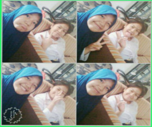
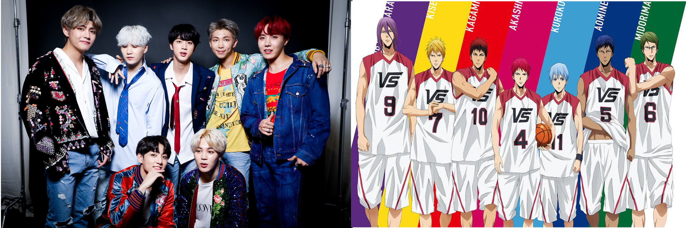
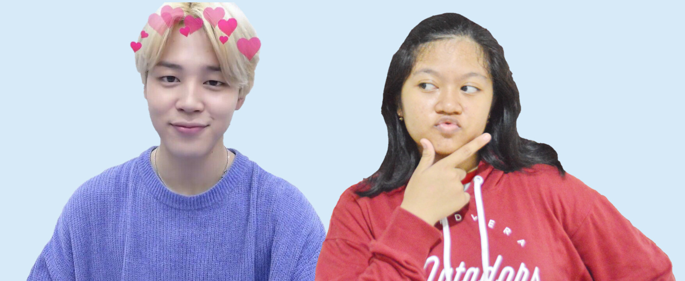
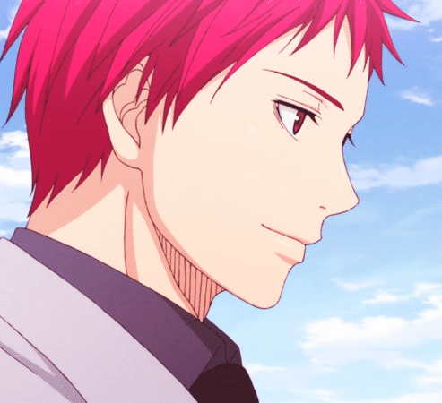

Halo, perkenalkan nama saya Syema Nur Risma, saya biasa dipanggil dengan syema / sye / syem. Saya dilahirkan di Bogor, tanggal 17 Mei 2001. saya adalah anak tunggal dari Dikdik Adinusa dan Helmi Susanti. Sekarang saya bersekolah di SMK-SMAK Bogor, dan saya berada di kelas 11. Saya pertama kali masuk sekolah pada tahun 2005-2007 di TK Al-Irsyad. Kemudian melanjutkan ke SDN Polisi 1 pada tahun 2007-2013. Saya memiliki pengalaman yang sangat menyenangkan waktu SD, yaitu saya menjuarai UN tertinggi di sekolah dan tertinggi ke 10 di Kota/Kab. Bogor. Saya melanjutkan ke SMPN 4 Bogor tahun 2013-2016, mulai dari sinilah saya memiliki banyak aktivitas dan hobi. kemudian saya melanjutkan ke SMk- SMAK Bogor. motivasi saya masuk smakbo karena, pertama, ingin memiliki teman baru yang. kedua, ingin berbeda dari yang lain. ketiga, mendukung saya agar mendapat pekerjaan. saya memiliki cita cita ingin bekerja di perusahaan minyak bumi.
Saya memiliki sahabat bernama Aprina Putri Sanda. saya bersahabat dengannya sejak kelas 6 SD. Satu tahun, waktu yang singkat untuk berkenalan dengannya. Karena, kami melanjutkan ke sekolah yang berbeda. Untuk tahun pertama di SMP, saya tidak merasa sedih, karena akan mendapat teman baru dan kami jarang berkomunikasi. namun, tahun kedua saya baru merasakannya. entah kenapa pada suata malam tiba tiba teringat sanda dan merasa sedih. setelah itu saya berusaha untuk selalu berkomunikasi dengannya sebisa mungkin. dalam beberapa tahun terakhir ini saya sempat beberapa kali beretemu. saya sangat ingin bertemu dengannya lagi untuk kedepannya, dan bercerita banyak hal, tanpa menutupinya sedikit pun.
saya memiliki kegemaran, salah satunya KPOP dan Anime. Awal pertama kenal kpop ketika saya berada dikelas 5 sd, kemudian berhenti untuk mengikuti kpop sampai saya kelas 9 smp. namun, karena di kelas 9 saya berteman dengan yang menyukai kpop dan anime. akhirnya jiwa itu muncul kembali, sehingga sampai sekarang tidak pernah berhenti. dulu alasan menyukai kpop karena mereka memiliki wajah yang tampan dan cantik, begitupun dengan anime. Namun sekarang berbeda. saya menyukai kpop karena saya suka menari (Dance). mereka (Boyband/girlband) memiliki tarian yang bagus, menantang, unik, dan keren. untuk anime, saya menyukainya tidak seperti dulu yang bisa dibilang fanatik. namun, saya masih menononton beberapa yang direkomendasikan oleh teman saya, kalau ceritanya bagus/karakternya tampan, saya akan melanjutkan nonton atau sebaliknya.
salah satu orang yang sangat saya sukai adalah Park Jimin. Park jimin adalah salah satu anggota dari boygrup yang bernama BTS. saya menyukainya karena dia memiliki wajah yang lucu dan tentu saja tampan. Tingkahnya kadang seperti anak kecil, kadang dia bisa seperti sangat-sangat orang dewwasa. Dia bisa menari sangat keren, itu adalah point utamanya
satu tokoh yang sangat saya suka di Anime adalah Akashi Seijuurou. Sei-kun adalah salah satu karakter dari anime Kuroko No Basuke. dia memiliki Karakter yang unik. dia memiliki kepribadian ganda. Entah Kenapa saya sangat menyukainya.